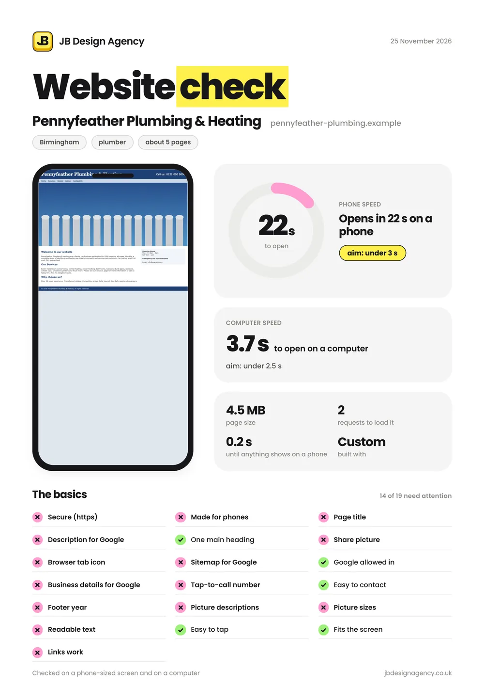
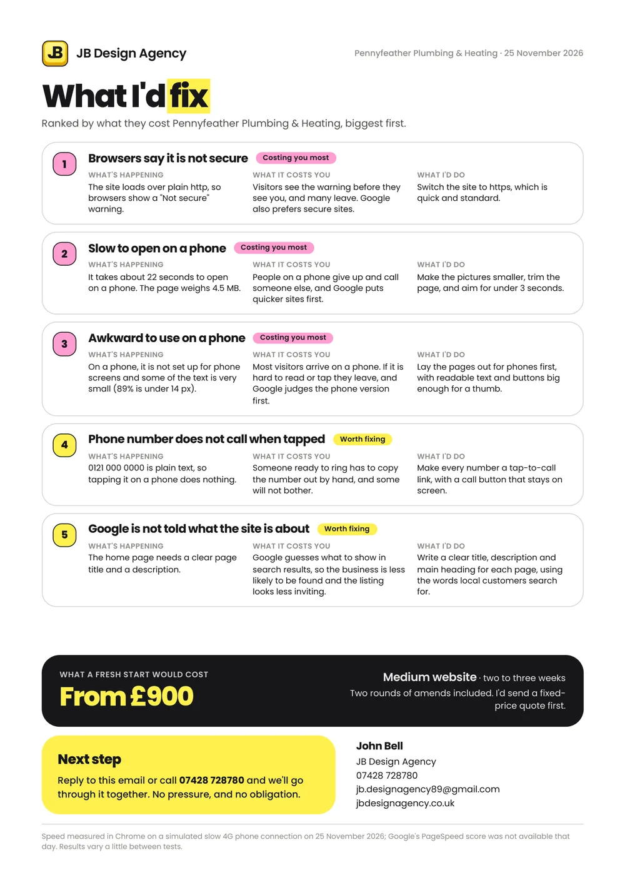

Free website check for your business.
Send me your web address and I’ll test your site the way your customers see it: on a phone, on a slow connection, and through Google’s eyes. You get a two-page report of what’s working, what I’d fix and what it would cost. It’s free, with no obligation.
- Free, with no strings
- Looked over by me, not just a tool
- Usually back within two working days
What you’ll get
A two-page report, sent as a PDF. This one is a real check, run on a made-up plumber’s website so I could show you one. Yours is about your own site.


What the numbers mean
The report is written so you can understand your own website. Here’s how to read it.
Time to open
How long until the main part of your page shows. On a phone, under 3 seconds is the aim. Much past 5, people give up and try the next business.
Page size
How much a phone has to download to show your page. Big photos are the usual cause, and often the easiest thing to fix.
The basics
Yes-or-no checks that decide whether people trust your site, can use it on a phone, can call you, and whether Google knows what you do.
What I check
The things that decide whether a visitor stays, calls you or finds you on Google in the first place:
- Speed on a phone
- Page size
- Secure (https)
- Made for phones
- Readable text
- Easy to tap
- Fits the screen
- Tap-to-call number
- Easy to contact
- Page title
- Description for Google
- One main heading
- Business details for Google
- Sitemap for Google
- Google allowed in
- Share picture
- Browser tab icon
- Picture descriptions
- Picture sizes
- Links work
Then I look over it myself, the way a customer would, before anything is sent. For a deeper look at getting found, see how to get your business on Google.
Ask for your free check
Tell me where to find your website and where to send the report. It takes a minute.
- A two-page PDF by email
- Plain English, no jargon
- No obligation to buy anything
How it works
Send your web address
Fill in the form above. No call, no sales pitch.
I check it
Speed on a phone, the Google basics, then a proper look myself.
Your report arrives
Two pages by email, usually within two working days.
Fix it your way
Do it yourself, ask whoever looks after your site, or ask me for a fixed quote.
Questions people ask
Is it really free?
Yes. No card details, no catch. If you’d like help fixing anything, I’ll send you a fixed quote, and you’re free to say no.
Do I need to know anything technical?
No. The report is in plain English: “opens in 9 seconds on a phone”, not jargon. If anything isn’t clear, reply and ask.
What kind of websites can you check?
Any website people can visit: Wix, Squarespace, WordPress, Shopify, GoDaddy or one built from scratch. The report says what yours is built with.
How long does it take?
You’ll usually have your report within two working days. Every one is looked over by me before it goes out.
Can I fix things myself?
Often, yes. For each problem the report says what I’d do, so you, or whoever looks after your site, can make the changes. Some are quick, like making your phone number tap to call.
How do you test the speed?
On a simulated mid-range phone over a slow 4G connection, which is what many of your customers have when they’re out and about, and again on a computer. Speeds move a little between tests, so I report the slower result.
What do you do with my details?
I use them to send your check and to follow it up once. They’re not added to a mailing list or passed to anyone else. You can ask me to delete them at any time.
Not sure how your website is doing? Let’s find out.
Ask for your free check, or get in touch if you’d rather talk it through first. I usually reply within a working day.
While you wait: what a small business website needs, what a website costs, or web design in Birmingham.